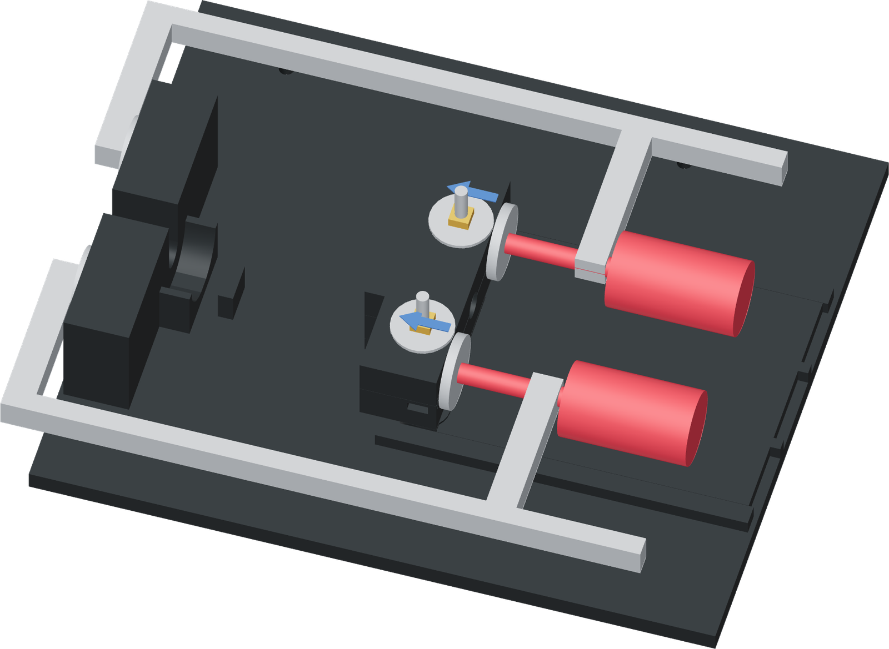

Preset travel without load
Use two complete BESSEY GSCC2.506 clamps. Set their available screw travel and handle clearance before placing the workpiece.

- Inspect both clamps unloaded. Each sliding jaw must hold position, each screw must turn freely and each swivel pad must be able to seat flat.
- Set each sliding jaw for a 142.5 mm starting pad opening. Advance the screw through at least 20 mm of available travel, then return to its starting position.
- Check that neither end of screw or pad travel limits that stroke. Leave room to back the pads away after insertion.
- Try both wooden handles in their intended positions. Both complete frames must clear the tube path, bench and neighbouring clamp.
Check the real clamps
The drawn pads and handles are nominal catalogue-form proxies. Check unloaded travel, full-face pad seating and handle access on the actual clamps before applying load; this setup supplies no force rating.